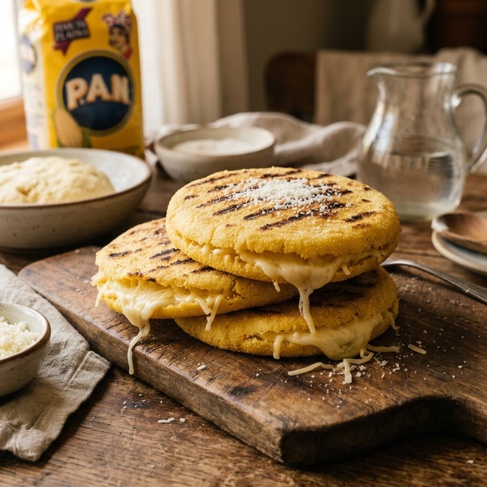

Arepas con queso
Una receta rápida y fácil para el desayuno o la cena, lista en unos 25 minutos.

Ingredientes
- 2 tazas de harina de maíz precocida
- 2 tazas de agua tibia
- 1 taza de queso rallado
- 1 cucharada de mantequilla
- 1 cucharadita de sal
Instrucciones
- Mezcla el agua tibia con la sal en un recipiente.
- Agrega la harina poco a poco y amasa hasta que no quede pegajosa.
- Incorpora el queso rallado y mezcla bien.
- Forma bolitas y aplánalas hasta darles forma de disco.
- Cocina cada arepa en una sartén con mantequilla, unos 5 minutos por lado.
Receta de referencia: Arepa en Wikipedia
© 2026 Mi Recetario